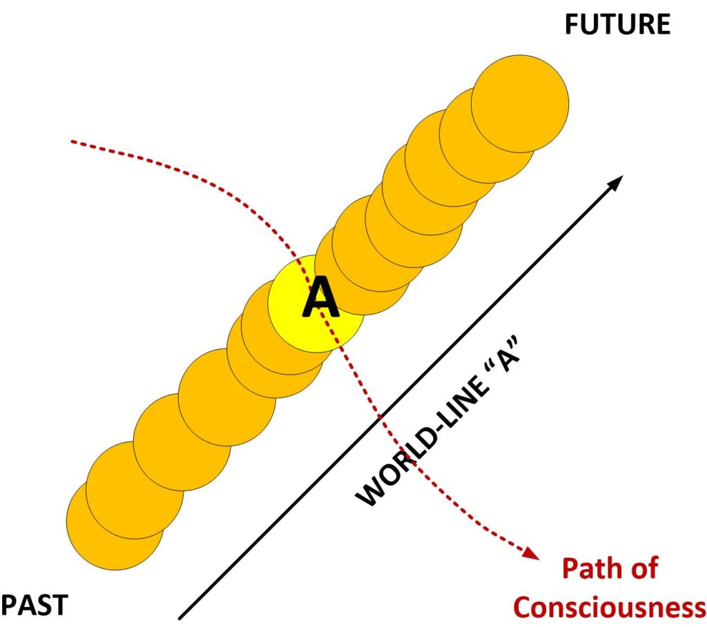

This is a very advanced article on world-line travel. In it we go into the details on how consciousness helps to target specific world-line groupings or clusters to navigate toward. And we are going to discuss the actual mechanism of how this occurs. As opposed to what I have described in the past “that it occurs”.
But first, before we get to that let’s discuss a few key points.
Where all this comes from
Long time MM readers will recognize that the information presented regarding the MWI and world-line travel is MAJ information. And while I am restricted from discussing MAJestic details in any way, shape or form, I am (however) permitted to discuss the technologies and sciences that I was exposed to by our benefactors.
That is, perhaps the reason why I am permitted to disclose all this stuff.
Just keep in mind that this, and all the related information, is not my invention. I did not come up with this information, these concepts, and these ideas as theories on my own. They were taught to me. And I had just as a difficult time embracing them as you all are dealing with now.
Nor are these writings descriptions of technologies as MAJestic understands it. What I present is not MAJestic information. It’s a side effect of my role. Not the role itself.
Nor is what is presented my theories, and ideas and concepts. I didn’t think these things out on my own. That is a fundamental truth. Long time MM readers will recognize this. Actually, I would rather eat some fine food, play with some girls, drink more than just a little, and enjoy the more physical aspects of life (the visceral aspects) rather than spend too much time on these esoteric subjects.
Instead it is what our benefactors believe how the universe works. It is what THEY believe, and by extension (knowing what I know), I believe it as well. I’m entangled with them. I will be until I die, and by all accounts, long after that as well. It’s the way things work.
And as such it is alien to everything taught inside American schools today. So you can either [1] believe what is conventionally accepted as truth, [2] adopt what I present as what our extraterrestrial benefactors believe, or [3] come up with your own ideas.
You might ask “well which species believes this?”
And (to that) my response is that all four species that I have had contact with believe it (to one degree or the other). Certainly the Type 1, <redacted>, <redacted> and the Mantids do.
A Quick Review
I have long described what time is.
Time is the movement of consciousness.
I have described world-lines as separate histories that a physical body can live. And there are nearly an infinite number of them.
I have described that consciousness cycles in and out between wave and particle forms to move in and out through world-lines.
And I have described how you can navigate through the MWI by controlling your thoughts.
And all of that is really all you really NEED to know. Right?
We focused on Consciousness as a singular entity
We have focused on consciousness as a singular homogeneous entity.
You start at world-line “A”
This world-line has it’s own history; it’s own past and it’s own future. And you are just residing inside the world-line for just a moment.

You can see that from the point of view of your consciousness, you see the world-line as a moment. In this case the moment is shown in yellow. And the world-line is shown in orange. It has it’s own past, and it has it’s own future, and your consciousness resides in it for a fraction of a second before moving on.
And by doing this over and over and over again, your consciousness is able to travel the MWI. You navigate through your thoughts in wave form, or your actions in physical form.
But that’s a rather simplistic explanation.
It’s a simple way of looking at MWI navigation
There’s this “blob” that we refer to as “our consciousness”.
When it is in particle form, it controls a physical body. As such it can perform physical actions with a reality.
When it is in wave form, it can think; generate thoughts, and thus select a world-line to occupy. This world line become the reality that the physical body will occupy.
And it is true. That’s how it works, but…
…it’s a really good approximation.
Yes. But it’s not the entire story.
And I covered this in another post / article. Your consciousness is not a singular “blob”.
Instead it is spread out thinly all over the MWI, with a tiny, tiny part of you in every single (active) world-line that has an active consciousness inside of it.
And the world-line that we consider to be the one that your consciousness travels to is the one where most of your consciousness resides for that frozen moment in time.
So…
The consciousness that actually occupies a world-line at any given moment is actually…
…the largest cluster of (your) consciousness components gathered together on a world-line.
So this is really difficult for us humans to visualize.
How can someone (a consciousness) be everywhere at once and experience everything at once?
But that’s actually not the way it is. Our consciousness has the potential to be everywhere at once and the potential to experience everything at once. But in all actuality, our consciousness does prefer to clump together. And thus FOR THE MOST PART, we can pretty much assume that the world-line that our consciousness is mostly part of is the one we are on at that given moment.
So, the tendency for our consciousness to “lump together” provides us this simplified understanding on how world-line travel works.
We just say, “well, 90% of my consciousness is hanging on on world-line Zelda, so I’ll just say that I am on world-line Zelda”.
But it gets interesting
As I described in another post, what actually tends to happen is that the consciousness likes to “straddle” nearby world-lines.
As in “Ugh, 90% of my consciousness is here on this boring world-line. It’s crowded. But if I put 30% here, 30% there, and 30% way over there, things will be more interesting, lighter and easier for me.”
And thus, the consciousness tends to separate and fraction out on the lines that it “straddles”.
Now, obviously these world-lines are all extremely similar to each other. You might have 560,000 grains of salt in your salt shaker in one world-line, and the nearby world-line that you are “straddling” has 559,000 grains of salt in the salt shaker.
Expert Tip The more world-lines that your consciousness "straddles" the greater your awareness of your reality, and the possibilities that you have to change it.
The “straddling” of multiple adjacent world-lines is a very common action of consciousness. People who tend to be more “aware”, or who can “sense things or others”, or those that have various degrees of extrasensory perception, have consciousnesses that tend to “straddle” far and wide.
Key Take Aways Consciousness straddles numerous world-lines at any given moment. The consciousness still operates as one singular unit, even though it occupies different world-lines. And thus it can use the sensory variations to help navigate the MWI and avoid problems.
You can never tell if you consciousness is “lumped together” or if it is straddling multiple world-lines at any given moment.
Nor is it important that you are aware of the actual distribution of the consciousness on the MWI.
But understanding that the consciousness can separate on different world-lines and still operate as one singular unified consciousness is important…
…and the entire purpose of this article.
Now this following point is VERY important…
From the point of view of our consciousness, there isn’t really anything like a world-line. Our consciousness does not see, nor recognize world-lines. Our brain does. Our mind does. But not our consciousness.
Instead it views world-lines on the MWI as “breezes” (I am trying to describe things using terms that I and you are familiar with.), Thicknesses. Heaviness, and lightness. As colors. As scents. As familiar and the unfamiliar. As comfortable, and as garish. So think of the MWI as a tumultuous current of colored oils and water, and stuff all moving about.
Like a fine flowing stream of water.
And the consciousness “swims” in that water…
And some parts of the consciousness are attracted to the “fast streams of water”. While other parts are attracted to the “cold streams of water”. While still other parts are attracted to the “thick streams of water”. While other parts of the consciousness are attracted to the “steamy parts of the water”.
So…
Parts of the consciousness move to the “nearest” sections of the MWI that appeals to it.
Key Point The consciousness is made up of parts, and components just like the soul is. And these parts and components are attracted to those MWI elements that are closest in similarity to it.
Now our mind has a very difficult time visualizing this.
We think of the consequence in that it would cause a break up of the consciousness in to all sort of tiny pieces all going this way and that.
But this visualization is wrong.
But that is exactly how it works.
Consciousness stays connected together no matter what direction it’s elements / components are attracted to…
So that brings us up to the HOW.
Here we will get into the precise mechanism that enables our prayer affirmations and desires to navigate us to exactly what we affirm.
You see, there are all sorts of variations in individual world-lines. Each world-line path comes with it’s own complete future and it’s own complete path. As well as it’s own attributes and characteristics.
For instance all the following lines might be similar (from the point of view of your affirmation objectives);
- America has been renamed to Am-Erica. It banned pizza, beer, wine, and pork chops. It recognizes 45 genders, and only 12 genders are considered able to run for government. But the house you wish for, the relationship you have, and the lifestyle you desire exists in perfection there.
- America was invaded by Canada. It has two space stations, a moon base and is the leader in harmonica manufacture. But the house you wish for, the relationship you have, and the lifestyle you desire exists in perfection there.
- America doesn’t change much at all. A new political party is formed. The Purple Party, and it lies in opposition to another new political party; the rainbow party. Democrat and Republicans go the way of the Dodo bird, and the government continues to exist playing the same old games, and the same media narratives. But the house you wish for, the relationship you have, and the lifestyle you desire exists in perfection there.
- America has split in three nations. One of the nations still refers to itself as the United States, and it’s citizens call themselves “the real Americans”. The rest have gone their own ways. The central nation now includes most of the American plains and the cities of Chicago and Denver. The capital of this new nation is called “Rainbowland” and has a democratically elected sovereign. But the house you wish for, the relationship you have, and the lifestyle you desire exists in perfection there.
The obvious world line direction would be the scenarios that has the smallest number of world-lines to traverse. Which would be the third scenario.
But what, by chance, the topography of your pre-birth world line precludes this obvious choice? What if the topography offers ‘smooth sailing’ for the top scenario (number one)? What then? And why would that be the case?
The elements that comprise your consciousness determines your world-line destination
Now, obviously, your thoughts set the direction.
But the actual manifested reality; the actual world-line that appears, is determined by the construction of your consciousness. And that, in turn is shaped by your soul.
Thus, how the world-lines materialize in front of you is not by random luck.
They (the world-lines as defined on the world-line template map) are formed “on the fly” as determined by where you are now… AND… the various elements that comprise the consciousness.
Expert Tip The world-line template map is constantly being revised and adapted to changes as your consciousness evolves, and your thoughts change. It's not really fixed. It just seems that way.
Now I do not know all that much about the intricacies of consciousness construction. All that I really know is [1] that complex construction of the consciousness exist. I also know [2] that consciousness is far more complex than what we (humans) think of as some kind of nebulous “blob”. [3] (Consciousness) has components, each with functions and features. And components [4] all work intimately with each other.
So…
For purposes of simplification, and to recognize that there is very little that I know regarding the components of consciousness, let’s just label them simply and describe how they work.
Component A
The first component we will call “A”. I suppose we could use a Latin name to sound impressive and scholarly. Like “Alpha”. But the truth is that we really do not know much about this component, or element of consciousness. At least not now. And at this stage “in the game”, we really don’t need to know. All we need to recognize is that “A” exists.
Further, we know that “A” is attracted to certain quanta arrangements.
So, as you are living your life and you keep on finding that you keep on experiencing the same kinds of things over and over again, might be an indicator that one aspect of the consciousness component “A” is attracted to those things.
For instance…
- A certain kind of person, or personality.
- A reoccurring problem, or event.
- A situation, that seems to repeat.
And so forth.
And you know, all of the components that comprise consciousness, will behave similarly.
So if we consider that consciousness component “A” is attracted to attributes “a”, then we can say that consciousness component “B” is likewise attracted to attributes “b” and so forth right down through all the various components that comprise the consciousness.
An example
So what makes a given target objective more desirable than another?
Your consciousness is following a trajectory upon the pre-birth world-line template, and heading to objectives(s) as defined by your thoughts. But there is a near infinite number of world-lines what would all meet your criteria, and your desires. So what makes one world-line better than all the others (that also meet your criteria)?
As an extreme example, we can consider a strawberry coke float made out of kiwi ice-cream possible on (for example) the following three scenarios…
- One is served in a ice-cream parlor that has flirtatious red head (the hair is red color) waitresses.
- One is served in a truck stop while you are waiting to have your car repaired for a broken universal joint.
- One is served in an Army mess hall, after you came from battle fighting the Russians in the Crimea.
So…
If your consciousness component “A” is fixated on red haired waitresses, the first scenario would incorporate the attribute “a” that meets that desire.
If your consciousness component “A” is attracted to mechanical disruptions of any types, then the second scenario would incorporate the attribute “a” that meets that desire.
And if the consciousness component “A” is attracted to the thoughts and feelings, emotions of those that surround you, and if everyone around you is fixated on a war with Russia, then the third scenario would incorporate the attribute “a” that meets that desire.
And that is how it works.
Of course, there are multiple consciousness components
There are multiple consciousness components. And the components, in arrangement, interaction, and utility, differ from other consciousnesses. There is no set “standard” consciousness.
Thus…
It is the consciousness components that define the pre-birth world-line template.
The pre-birth world-line template
The pre-birth world-line template is the topographical “surface” that your consciousness travels upon when traversing the MWI.
It is functionally defined by the interaction of your consciousness “components” make up, and interactions.
And each consciousness has a different one…
John The template is a,b,c,d,e,and f.
While for Suzy…
Suzy The template is 2a,c,d,e,f,h,and,3k
And for Peter, it’s even more extreme
Peter The template is (a+c), d,e, H, (H+x), and u.
Thus, no matter how many “slides” you perform off the pre-birth world-line template, you consciousness will drive you back to it. So you must keep on working and performing the prayer / affirmation campaigns to keep on track towards your goals.
Functionally, while the consciousness does change and evolve through a given lifetime, for the vast majority of people, the changes are not significant enough to move you to a completely different pre-birth world-line template.
And for the world-lines themselves…
Obviously the most likely world-line (next) for your consciousness to visit is heavily influenced by the world-line map topography.
And this is determined by the individual components of the consciousness.
And this is why that you will, and are experiencing, the world-lines as you have. And why you find yourself in a world-line where everyone wears masks, people are worried about climate change, and where a hamburger meal costs $10.
How to use this knowledge – The “slipstream effect”
If you tie your affirmation campaigns to a group of other people, who also run and operate campaigns, you can benefit from the mass of shared thoughts. It’s a “slipstream effect”.
A slipstream created by turbulent flow has a slightly lower pressure than the ambient fluid around the object When the flow is laminar, the pressure behind the object is higher than the surrounding fluid The shape of an object determines how strong the effect is. This enables less force to be applied to move though a fluid.
If you add the following affirmations, they will contribute to manifest this slipstream effect…
- My affirmations tie together with affirmations of other MM followers so that they all combine with a positive “slipsteam” effect.
- This slipstream effect acts as an accelerator for all of us to benefit from.
- In slipstram affirmations that run counter to my personal affirmations listed herein, they are ignored, and does not influence this campaign.
The “slipstream effect” combines consciousness component targets to a shared pool.
So instead of your consciousness…
Your active template
You a,b,c,d,e
And Roger’s active template
Roger a,b,c,x,y,z
Your new “active” world-line template (provided you permit the “slip steam effect”) will not look like this…
Shared 2a,2b,2c,d,e,x,y,z
Those elements of “a,b,and c” will manifest twice as fast (in this example.). Now, just imagine, say, twenty people. All with a much wider and diverse targets for the individual consciousness components. And then, add this to the complexities of the shared and combined quanta associations…
…in ways that we just don’t really understand…
…with rules as odd as…
15f = 3a and f + h 6y = x,d+t, and 21s
Can really create some amazing outcomes for prayer affirmation campaigns. Amazing, like you have NO IDEA!
Keep in mind…
At all times, you must keep in mind that the methodology (of using a visual guide for mapping world-lines) and the idea that consciousness is broken into clusters (that define components) is but a mental “crutch” that describes a very, very complex system.
Other techniques can be used. But this is the one that my mind established by direction by <redacted> as part of my MAJ operations.
By understanding this principle, you can best understand how all the other “rules” as specified all fit together and work together regarding prayer affirmation campaigns.
Key take aways
- Consciousness is complex.
- Consciousness is not a “blob” but consists of multi-dimensional components that work together in unison.
- These components that define the make-up of consciousness also define the structure of the pre-birth world-line template.
- These components, working alongside our thoughts, define the types of world-lines that we encounter and occupy.
- Consciousness can and does evolve with experiences.
- Consciousness components are difficult to change, and thus if left alone, all travel on the MWI falls upon the default pre-birth world-line template.